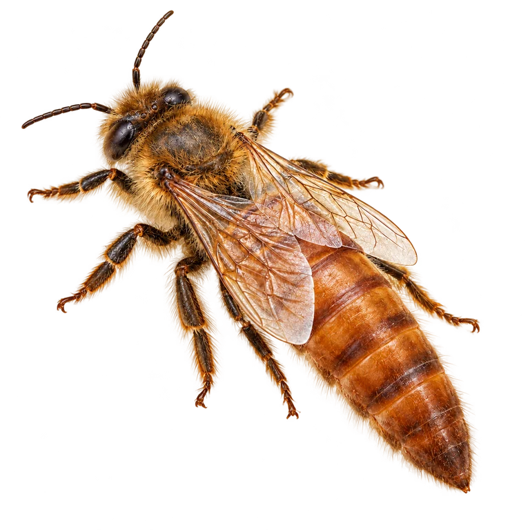
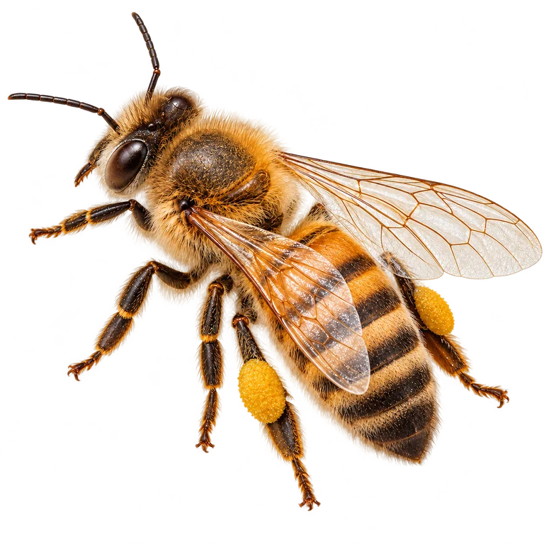
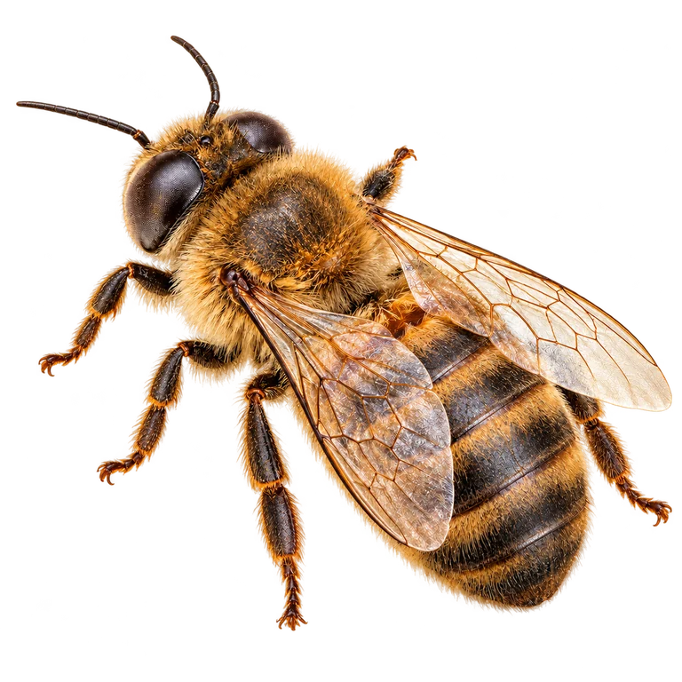

The queen

The queen lays the eggs that become the next generation of bees.
Snowman’s field guide · Southwest Kansas
Meet the queen, workers and drones, and learn how they live together.
Realistic illustrations, enlarged to show detail. Images are not to the same scale. Tap an illustration for a closer look.

The queen lays the eggs that become the next generation of bees.

Female bees that care for brood, maintain the nest, defend it and gather resources.

Male bees that mate with virgin queens.
“Brood” means the developing young. The egg hatches into a larva; after growth and feeding, the bee develops through the pupal stage and eventually emerges as an adult. Development time differs among queens, workers and drones.
Female larvae can develop into workers or queens. Diet during early development matters. Larvae being raised as queens receive a steady, rich diet of royal jelly. Colonies raise replacement queens during swarming, supersedure or an emergency loss of their queen.
Honey bees usually develop as females from fertilized eggs, with two chromosome sets, and as male drones from unfertilized eggs, with one set. This is called haplodiploidy. Because a queen mates with multiple drones, the workers in a colony can have different fathers.
All honeybees have a fat body, an organ that stores nutrients and helps keep them healthy. In winter workers, it becomes more developed and holds important reserves, including a protein called vitellogenin. These reserves help workers survive for months and care for the next generation. It is more than a layer of fat, and stored honey still fuels the winter cluster.
Winter bees are workers whose bodies and behavior are suited to a longer life. As autumn pollen supplies dwindle and brood rearing slows, young workers can retain more reserves instead of using them to feed large numbers of larvae. Brood pheromones also influence this process. Nutrition, colony activity and seasonal conditions work together; it is not simply a change fixed in a larva before it emerges.
Foragers, the workers that collect nectar and pollen, also exchange chemical signals with other bees. Researchers have explored whether more foragers staying inside helps trigger winter-bee development. A field trial of added forager and brood pheromones found no overall change in winter physiology or survival. Returning foragers are not an established single switch that turns larvae into winter bees.
See how hive care changes through the seasons →
Nectar provides energy, and pollen provides nutrients needed to raise young bees. Even a hive full of honey needs pollen. The flowers available nearby affect how quickly a colony can grow.
Educational guide · Updated October 21, 2026.
Observe your own colony and local conditions. For diagnosis or treatment decisions, use qualified local advice and the current product label.